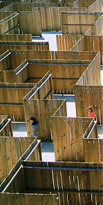
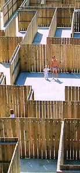
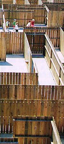

| This article is somewhat out-of-date because it was first posted in October, 1998, when I had just started my web site. It is adapted from a column I wrote for the July/August 1998 Mensa Bulletin. At that time, fence mazes were popular and cornfield mazes were just beginning to catch on. Recently (December, 2002), I added correspondence after the article, and the correspondence gives some information about what has happened with outdoor mazes since 1998. More letters were added in 2009. |
Mazes to VisitIn America we don’t have the stately hedge mazes found in Britain, but we do have many fence mazes. Fence mazes may lack the beauty of hedge mazes, but strictly as logic puzzles they usually surpass hedge mazes. Unfortunately, all our fence mazes are goofy-looking roadside attractions that promise fun-for-the-kiddies.
The mazes really are fun-for-the-kiddies, but they’re much more. Here’s what happens when you visit a fence maze: At first you’ll say, “Okay, this doesn’t look too hard. I should be out of here in no time. I’ll just go down this corridor, then this looks like the way to go, then I’ll turn here, then |



The best-designed maze I know is the brilliant Maze Mania, shown at the left. It’s in the town of Garden City, just south of Myrtle Beach, South Carolina. A unique feature of Maze Mania is it has several open areas, or plazas, inside the maze. Entering one of these plazas is a pleasant visual experience, and since there are about four exits from each plaza, you are presented with many choices at one time.
|
The object in Maze Mania is go into the entrance to the maze, find the “cheese” hidden in one of the plazas (actually it’s a machine that prints a picture of cheese on your time card), then find the separate exit from the maze. Having a goal (in this case, the cheese) inside the maze is a way of defeating the right-hand-rule algorithm. A lot of people know this algorithm (you put your right hand on a wall and just follow it around), but it doesn’t solve every maze. If you use it, and it does solve a maze, then you will have solved the maze without having any fun. “So,” you’ll probably ask, “what maze should I visit if I won’t be anywhere near Myrtle Beach?” I don’t really have a good answer for this. I can point you toward a fairly complete list of all the mazes in this country (and in the world). It’s Adrian Fisher’s World Maze Database. Also check out the American Maze Company’s site. It gives a list of most of the cornfield mazes that will be around during the summer. Cornfield mazes are a lot of fun, even when they aren’t too well-designed. Of the mazes I’ve visited, the chief flaw I’ve found is poor handling of false paths. A lot of designers think you just have to draw a true path to the goal, have various false paths branch off the true path, and have each false path go directly to a dead end. A maze like this is boring and easily solved. That flaw is most obvious in a large maze in Panama City Beach, Florida, and in the old maze in Vacaville, California. A better way to handle false paths is to have them lead into loops, or to other false paths. Even better is to have a section of inter-connecting paths that you can wander around in. There should be only one exit from this section, and it should take you to another section of inter-connecting paths. Another flaw is to have multiple goals to visit (at each goal there’s a machine that punches a number on your time card). That flaw is in many mazes, including one in Daytona Beach, Florida. With multiple goals, you just wander at random and you’re sure to come across one goal after another. The worst flaw happens when a designer creates a very large maze (like one of the large cornfield mazes). The designer then realizes the maze is too hard, so he puts in two or more separate solutions to the maze. And, finally, a maze should not be solvable by the right-hand rule. In spite of all these flaws, I hope you visit a outdoor maze. Even a poorly-designed maze can have some interest. I’ve visited most of the fence mazes on the East Coast, but I haven’t visited any in Colorado or in Southern California, so there might be some good mazes that I don’t know about in these areas.
Recently I received a nice letter from Walter Pullen. He knows a lot about mazes and since 1996 he has maintained a web site devoted to mazes. 1996 is, of course, ancient by Internet time. Here is his letter plus some follow-up:
November 25, 2002
Hello again! We’ve corresponded a few times over the years, most recently in 2001. I read your life size Maze essay and wanted to comment on it.
Good vs. bad: You mention several things that make a life size Maze “good” or “bad.” I consider a good Maze to have either or both of the following characteristics: (1) It’s a challenging Maze for its size, (2) It’s a fun Maze to experience and try to solve. A Maze may have other characteristics, such as it may be considered artistic or mathematically interesting, but they don’t affect the user as much unless they also affect the Maze’s difficulty or enjoyability, e.g. it may be fun to enter a very beautiful hedge Maze.
Rooms: You mention the open rooms in the “Maze Mania” Maze being a good thing, where each room has four passages leading away from it. Note a open room can be considered just a wide passage. If you thicken the walls, a room can be made as wide as any other passage, where a room with four passages leading away from it reduces to a crossroads. I understand the spirit of open rooms being a good thing. More generally I’d say landmarks or things to break up the monotony of a Maze are a good thing and increase their “fun” characteristic. Landmarks also better enable one to use their memory or other cognitive skills as an assistance in solving. Other examples of landmarks used in life size Mazes are bridges, towers, different colored wall sections, and so on. Glacier Maze in Montana even has humor, specifically “Far Side” cartoons tacked on a few of its walls, as well as clues scattered throughout (which may or may not be useful to read).
Checkpoints: You mention checkpoints or trying to reach multiple points in a Maze being a bad thing. I disagree, where checkpoints add interest in several ways. Checkpoints break up the monotony, where you can feel like you’re making progress in stages. An issue with Maze Mania is you’ve either found the goal or you haven’t, where there’s nothing to do along the way. I agree that when there are multiple checkpoints, the user will find the first few ones faster, since there are more available when you start. However that’s not a bad thing, as it engages the user’s interest and makes them want to find the rest. Checkpoints don’t make a Maze any easier, as once you’ve found all but the last checkpoint or two, the Maze becomes as hard as a normal Maze with only one goal. In fact a Maze of a given size with checkpoints is harder, since you need to cross the Maze several times in order to find them all. Glacier Maze has four checkpoints in towers at the four corners, where you can use those towers that loom over the walls as landmarks to try to reach.
Ordered checkpoints: Note a Maze with checkpoints may require you to visit them in order. This basically makes the Maze a sequence of Mazes within the same passages, where again this challenges a smart person to use their memory to more quickly navigate the paths. For example assume you’ve found checkpoint #1, however along the way you passed checkpoints #2 and #4. Can you remember the way back to them? The Maze challenges in Survivor II and Survivor IV had five checkpoints the contestants had to visit in order. [For maps of the Survivor mazes on Walter’s site, click here and here.] Note Maze Mania is basically a Maze with two ordered checkpoints, where checkpoint #1 is the cheese, and checkpoint #2 is the exit.
Multiple solutions: You mention multiple solutions in a large Maze being a bad thing. Although I agree a corn Maze designer who realizes his Maze is too difficult and makes changes after the fact to make it easier, should have considered and tested his design better before building it, I wouldn’t necessarily say an easier Maze is “worse” than a hard Maze. If you know a Maze has two solutions in it, you can try to find them both for an extra challenge. A Maze with very different multiple solutions is more fun when playing tag, hide and seek, or other games inside of it, where multiple solutions prevent bottleneck points where one person can stand and nobody can solve the Maze without passing by them.
Loops: I agree that a long solution isn’t necessarily a better solution, where sometimes the hardest Mazes have a relatively short solution once you find it. I also agree that a good Maze has well designed false passages. Loops indeed tend to make a Maze harder to solve, as you can go in circles and forget from which way you came, while dead ends are a clear indication to backtrack. I’ve been in life size Mazes that have only loops and no dead ends at all, where the logic behind this is you can always move forward, which helps prevent people from bunching up in the Maze when there are many people inside it. Note bridges are an nice way to prevent wall following from working to solve a Maze, which can work even when the start and goal are on the outer boundary, where you have one end of a bridge that’s on the solution path be surrounded by a loop.
Wall following: I agree that not being able to solve a Maze by following a wall increases its challenge, but it’s not necessarily something I would do for every Maze. For example, in a Maze for children it might be good to allow wall following to work, where it would be a good mental exercise for them to be able to apply the rule and see the results of it working. Artistically, knowing that wall following may or may not work to solve a given Maze gives one an interesting choice in a race to solve it, where they can try slowly executing a more involved solving algorithm that’s guaranteed to work in x minutes, or try wall following which might solve the Maze in x/2 minutes or may just waste that time. :)
Walter D. “Cruiser1” Pullen :)
December 1, 2002
Walter,
Nice to hear from you again.
Comments on your comments: Yes, artistic elements (as opposed to logical elements) are important in mazes. I can see how the beauty of a hedge maze adds to the experience. Even the cornfield mazes are an artistic experience because it’s pleasant just to be in a cornfield. However, I think it’s the height of stupidity to shape a cornfield or hedge maze to look like a picture—a picture you could only see if you were above the maze in a helicopter. But everyone thinks this is great. In our current age of ignorance, no one can enjoy anything unless it has some sort of theme.
Yes, I realize that the plazas I liked in “Maze Mania” are logically equivalent to crossroads, but I was interested in the vistas they provide. Your idea about landmarks is great. I wish this was done more often in mazes.
I disagree with you about multiple goals (or “checkpoints”), but your idea about “ordered checkpoints” is pretty good. I hadn’t thought about there being a difference between ordered and non-ordered checkpoints. I also hadn’t realize that the mazes in Survivor had ordered checkpoints. By the way, Don Frantz, of the American Maze Company, was working with the producers of Survivor about using one of my walk-through mazes-with-rules. I thought they were going to do it, but then the head guy on Survivor said he had an English friend who creates mazes and he wanted to use him. I never found out who this English friend was. It wasn’t Adrian Fisher (who is the only English maze designer I know).
I haven’t updated my Life Size Mazes article since I posted it in 1998. I never found a maze that I thought was as good as Maze Mania. Unfortunately, Maze Mania isn’t doing good business and may disappear. Cornfield mazes are still doing quite well, but I get the impression that fence mazes are on their last legs. I haven’t seen anything new here in the East. I never visited many mazes in the West except I finally got to see the maze in Anaheim, and it was terrible. It had the worst design: you could walk through in any direction and only rarely would a barrier stop you. Obviously, they wanted to make sure that no one would be puzzled by the maze. Also, the maze was falling apart. I took some pictures, which I just posted here.
Would you agree with me that fence mazes are not doing very well? I don’t really know what is happening out West.
Best,
Bob Abbott
December 3, 2002
Hello!
I wouldn’t say making a cornfield or hedge Maze look like a picture is a bad thing. Yes it gives the Maze a theme, but a Maze that forms a picture is a work of art, and it also creates additional public interest, as opposed to the Maze just being an abstract puzzle. A picture can be appreciated when you’re inside the Maze too, as opposed to only from the air. Many Mazes these days give out maps of the Maze, or at least have an aerial picture displayed by the entrance. While going through it, it’s a good exercise to mentally connect the passages where you are to the picture. For example, this triangular shaped room in the far corner of the Maze has to be the cow’s ear. More importantly, a picture or theme can attract sponsors and the media. A newspaper or TV station is more likely to do a story and take an aerial photo of the Maze if it actually forms an artistic picture. A Maze can be in the shape of a company logo or spell out some advertisement in exchange for upfront or continuous sponsorship. Like it or not, Mazes need to be profitable, or else sponsored by some rich source, just as race car drivers cover their cars with decals. If Maze Mania had a corporate sponsor or something that would make the media give free advertising by taking an aerial photograph of it and running a news article, it might be more profitable and wouldn’t be at the risk of shutting down.
Fence Mazes can still be successful, although I agree some at least aren’t doing well. For a while fence Mazes were a fad, especially in Japan. Even 14 years ago, in 1988, I read an article about how half the fence Mazes in Japan were being replaced with more popular things. Glacier Maze is still making money, since it’s right by Glacier National Park, so everybody that visits the park has an opportunity to visit the Maze. The people there said such a positioning was better than in a populated area, as you get as just as many people going by, but more importantly it’s a continuous stream of different people who probably haven’t done the Maze before, and who are on vacation. As with any business, it requires the right economic analysis to be profitable. In recent years cornfield Mazes have been more popular, as each Maze can be entirely new, created cheaply, and doesn’t need to be maintained as it only needs to last a season.
Note since we talked last I’ve released a new version of my Maze program Daedalus, which can be seen here. This new version features its own macro language like Visual Basic, where you can create scripts to implement Maze games or other operations. For example, Daedalus comes with a script which perfectly simulates the Maze from Survivor II, where you need to find the checkpoints in order. You might also like the script which simulates the “Squared Off” game from Survivor I, where everyone tries to run each other out of room on a square grid. I could reproduce the 15 levels of Theseus and the Minotaur in a script in a few hours. :) Note Daedalus also has a low level editing operation to convert open spaces within a Maze to narrow passages, i.e. Maze Mania rooms to junctions or crossroads, with its “Maze / Remove / Fill Open Cells” command.
Walter D. “Cruiser1” Pullen :)
Here is some recent correspondence with other people. There is some back and forth here about using an iPhone with GPS to walk through a maze.
April 25, 2009
Mr. Abbott,
I just wanted to drop you a quick line and give hopes that you are doing well. Every year customers mention your write up on Maze Mania, and for that I am grateful. As for Maze Mania, last year was a little slower than usual, although 2007 was our best year to date. This spring started slowly, but we are having the best April we have had in a number of years. Due to our location, we still focus mostly on families with kids, although I have noticed increased interest in adults who treat it more like a puzzle, rather than just a game. The newest trend I have noticed is customers attempting to use personal GPS systems to navigate through, although they would probably finish quicker (and have more fun) by using their brain instead of their iPhone. I toyed with the idea of using multiple check points, but found that due to our size it actually made it a little easier (by providing "landmarks").
If there is ever anything we can do for you or your family, please do not hesitate to ask. We wish you all of the best.
Sincerely,
Rocky Altman
April 25, 2009
Rocky,
Thanks for the letter.
I had never heard of people using the GPS system on the iPhone to go through a maze! I'm thinking that maybe there are other things you can do with an iPhone and a walk-through maze. I'll pass your letter on to Jason Fieldman to see if he has any ideas.
Jason programmed my Theseus and the Minotaur mazes on the iPhone and it became something of a best seller. He is now working for a company that I think is doing a new GPS system for the iPhone.
What I'm hearing from the cornfield maze companies is they aren't doing very well. Cornfield mazes are a fad that started in 1993, and I think it's beginning to die out.
Best wishes,
Bob Abbott
April 25, 2009
Jason,
Attached is a letter from Rocky Altman, who owns the Maze Mania
fence maze.
His letter said that people are walking through his maze while
using the GPS system on the iPhone! That astounded me, but it
also got me thinking: maybe there are other things you can do
with an iPhone inside a walk-through maze. I thought I'd pass
the letter on to you to see if it gives you any ideas. One thing
I thought of is a maze with invisible walls. I wrote about a
failed attempt at this [here]. This explains
an attempt to use electronic dog collars and "invisible fences."
If the iPhone could respond to something on the ground, then it
could sound an alarm if you try to go through an invisible wall.
Best wishes,
Bob Abbott
April 28, 2009
Hi Bob,
In response to the iPhone-specific aspect of this, I can only share anecdotal evidence that the iPhone's GPS capability may not be accurate enough for use inside of person-sized outdoor mazes. I've written a test program for another concept, but was never able to reliably get better than 10 meters of accuracy.
That's not too bad when you're in a car, especially when you can average several readings out over distance and time, but it can cause serious problems for someone walking through a maze that is potentially only 1-2 meters wide (where accuracy matters very much).
However, your idea in general alludes to handheld devices (with GPS capability) aiding some fashion of alternate reality game. There have been a few attempts at this, the first that comes to mind is Parallel Kingdom [here], which has astonishing low production values and is not really fun at all. But the seed is there for an interesting game. Basically, PK overlays monsters and in-game environmental features over the Google Maps rendering of your current location.
I've tossed some ideas around with friends, but we haven't come up with any winners. We had an idea that was *close*, but still had some inherent flaws that we eventually gave up on. When I get a moment I'll do a write-up on that idea and send it out to this list :)
Regards,
|
{kind=link}
{kind=link}